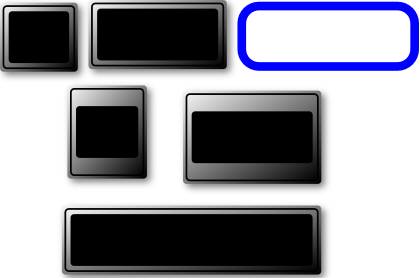

MBLogic
for an open world in automation
MBLogic
for an open world in automation
Simple Output Objects
Pilot Lights
A pilot light is any object whose "fill" property can be manipulated. The "fill" property of an object is its colour. By changing the colour of the object different states can be indicated.
The standard HMI graphics comes with several pilot lights. In its default state a pilot light will appear to be black because there is no "fill" colour defined for it.
To use a pilot light:
- Drag it onto the drawing and position it where desired.
- Select the object.
- Right click and select "object properties".
- Set the "id" to the desired name. Be sure to record this name as you will need it later.
See the section on "Setting the id Property" for more details.
Text and Numbers
Text and numbers are both text objects. Text and numbers are not confined to text and numeric display boxes, but can appear anywhere on the screen. The text and numeric display objects are simply passive backgrounds which help to make the text or numbers easier to read.
To use a text or numeric display box object:
1) Drag it onto the screen and position it appropriately.
Text and numeric objects come in various forms. Numbers should normally be right justified, while text is normally left or centre justified.
To use a text or numeric object:
- Drag a text or numeric object onto the screen. Position it on top of a numeric or text box if desired.
- Select the object.
- Right click and select "object properties".
- Set the "id" to the desired name. Be sure to record this name as you will need it later.
